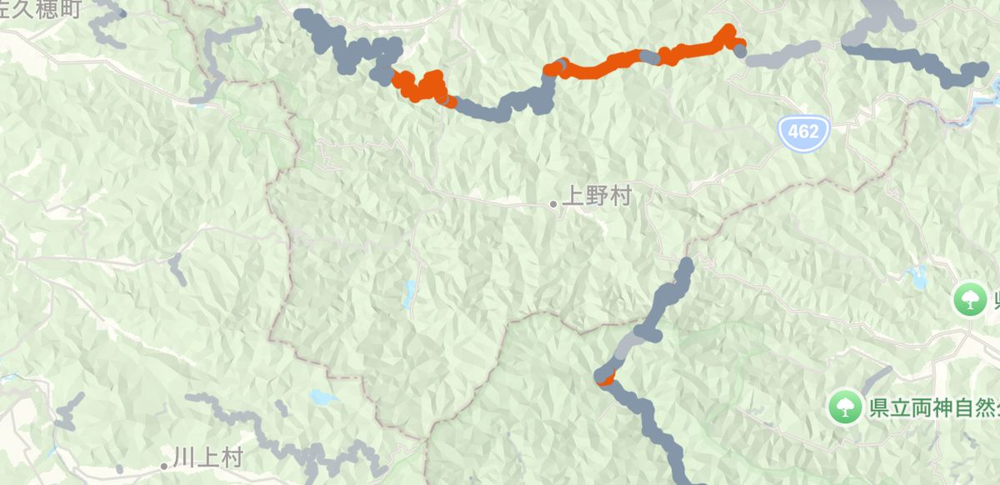
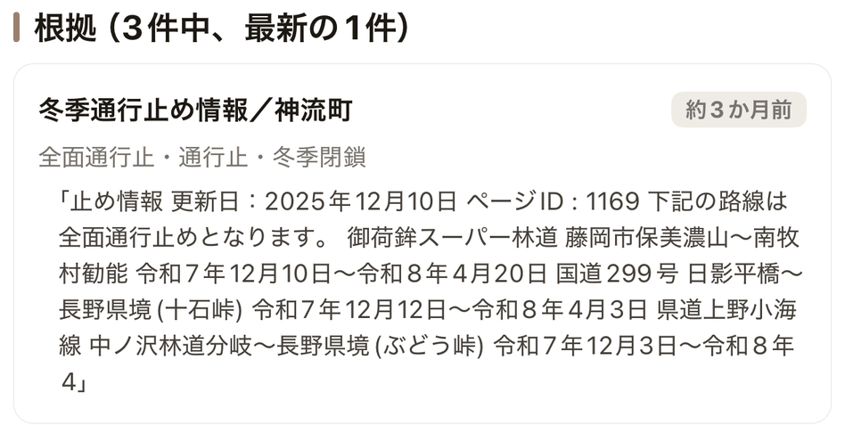
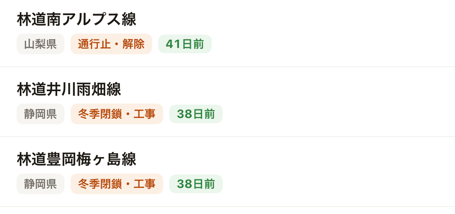

行ってみたら通行止め、を減らす。
全国の林道を地図に。通行止めは、出典と日付ごと出します。
- 35,164
- 地図に載る林道
- 44,374km
- その総延長
- 44.3%
- 国の統計に対する被覆率
- 47
- 都道府県
通行止めは、要約せずに出す

自治体が書いた文をそのまま置きます。誰がいつ書いたかと、取り込むまでに何日たったかを必ず添えます。
出典: 神流町「冬季通行止め情報」。取得 2026-08-13。掲載は公開情報の転載です。現地の規制標識・ゲート・管理者の指示が常に優先します。
薄いところを、買う前に見せる
同梱した距離を国の統計で割った値です。全国で44.3%。石川県は4.8%しかありません。
分母: 林野庁 森林・林業統計要覧2025 表18 既設林道の現況（令和5年度末）。47都道府県の数値表はサポートに載せています。
何が、どこから、何本
層ごとに出どころとライセンスを書いています。
電波が無い場所で開く

この55MBは全部アプリの中にあります。表示に通信はしません。電波が要るのは地図の背景だけです。
買い切り800円。月額はなし
地図・路線名・路面の色・最新の規制1件・収録状況は無料です。買うと規制の全履歴と根拠、台帳の値、出典リンクが開きます。
価格は App Store の表示が正です。無料と有料の全項目
全国は網羅していません。規制情報が読めるのは323本・39都道府県です。